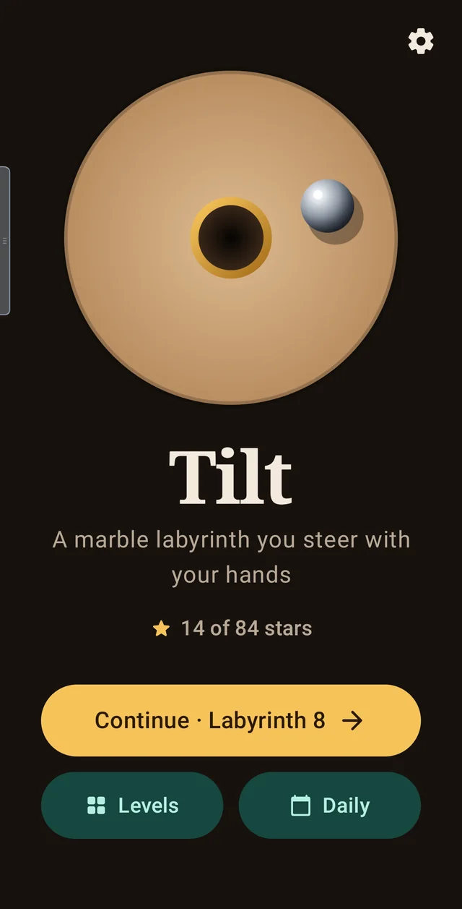
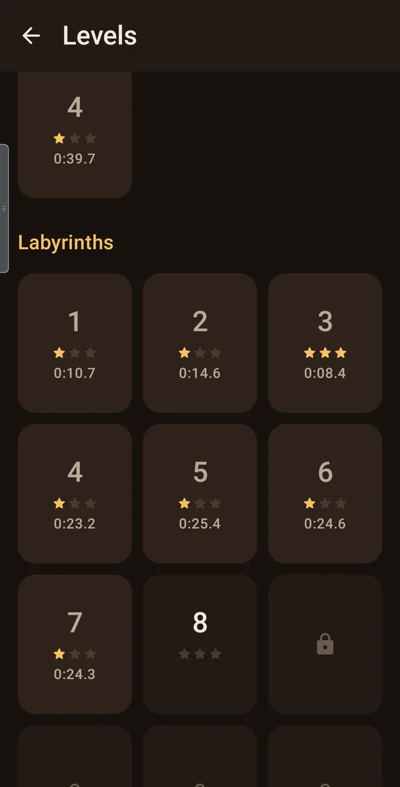
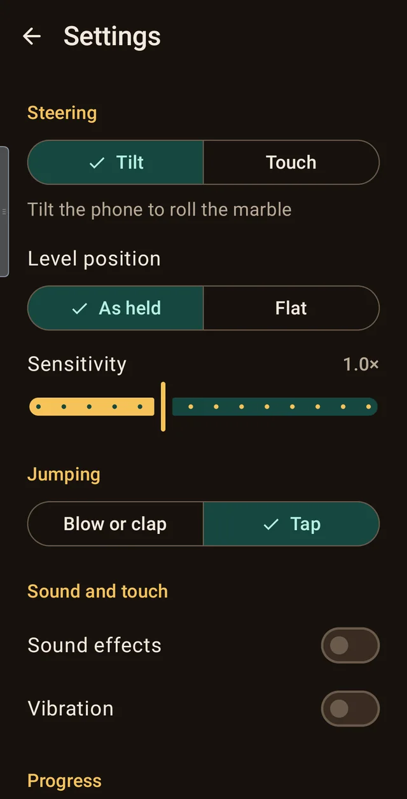
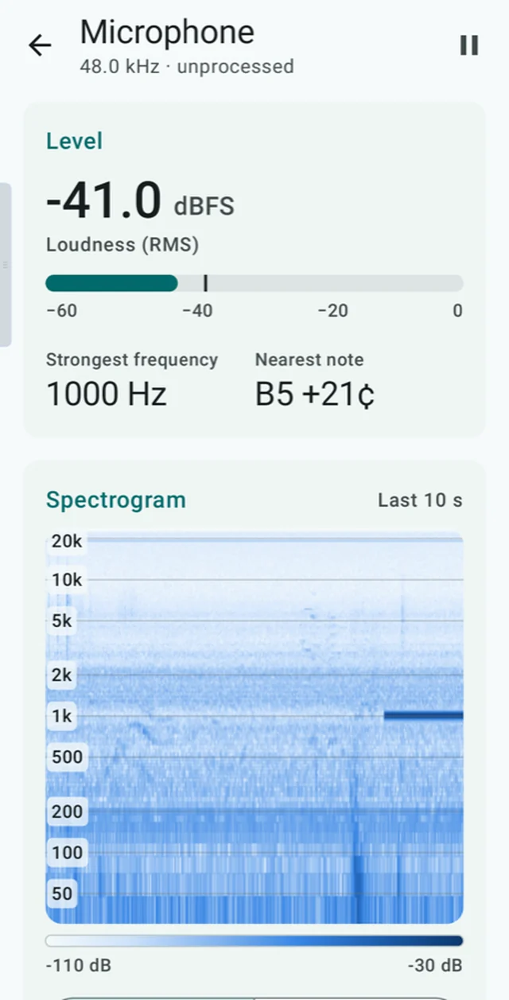
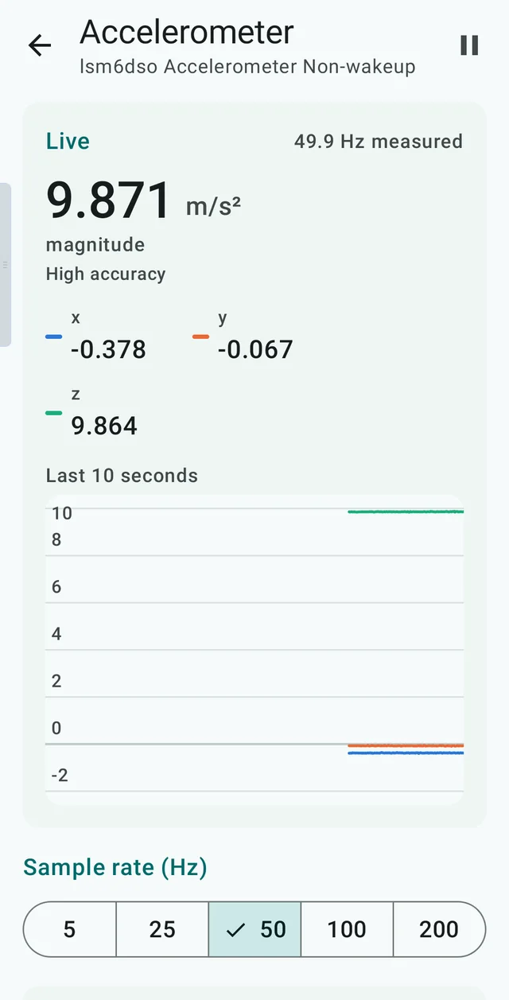

A marble with weight
Rolling physics run 240 times a second: the marble picks up speed downhill, bounces off walls, and rides a hole's rim before it drops. Clip one at speed and you might just skim past.
Free · Open source · Android
A wooden labyrinth in your hands. A steel marble that rolls, knocks and drops like the real thing. And when a hole fills the whole corridor, a puff of breath to jump it.
Android 8 or later · 1.3 MB · No ads, no accounts, no tracking
Hold the phone however feels natural. That pose becomes "level", and leaning away from it rolls the marble that way.
When a hole spans the whole corridor, build up speed and blow on the microphone or clap. Prefer tapping? That works too.
Beat the par time for three stars. Fall in a hole and you're back at the last flag, a few seconds poorer.
Rolling physics run 240 times a second: the marble picks up speed downhill, bounces off walls, and rides a hole's rim before it drops. Clip one at speed and you might just skim past.
Every sound is synthesised live, nothing is a recording. You hear a wooden rumble that rises with speed, a sharp metallic click that matches each hit, and you feel the knocks through the phone.
Before a level reaches you, a built-in player finishes it twice without falling: once steadily and once with a deliberately shaky hand. Levels that need perfect precision are thrown away.
Four training levels teach each move, then 24 labyrinths grow from small and gentle to big, looping and full of traps. A fresh challenge every day, the same for everyone.
The board is lit from one side and its walls lean as you tilt, as if you were looking into a real wooden box. It's drawn on its own thread, so it stays smooth.
Steer by tilting or by dragging, jump by sound or by tap, and adjust sensitivity, volume and vibration. The microphone is only on while a level needs it, and nothing is recorded.



Also in the repository
The toolkit Tilt grew out of: every sensor on your phone, live. Charts for motion and environment sensors, a microphone spectrogram that names the note you're playing, and a camera that redraws the world as line art.
It also streams sensors to your computer over USB. Plug the phone in and read it from a terminal with the sensorctl script from the repository:
$ sensorctl list
$ sensorctl stream accelerometer --rate 50
$ sensorctl read light

Every release is signed with the same key. Its SHA-256 certificate fingerprint is
23:45:90:1C:76:CA:C4:1D:74:FA:ED:E6:CF:1E:CC:60:64:3C:9E:E3:B1:2B:E3:4F:E4:77:6D:FA:89:57:06:5A